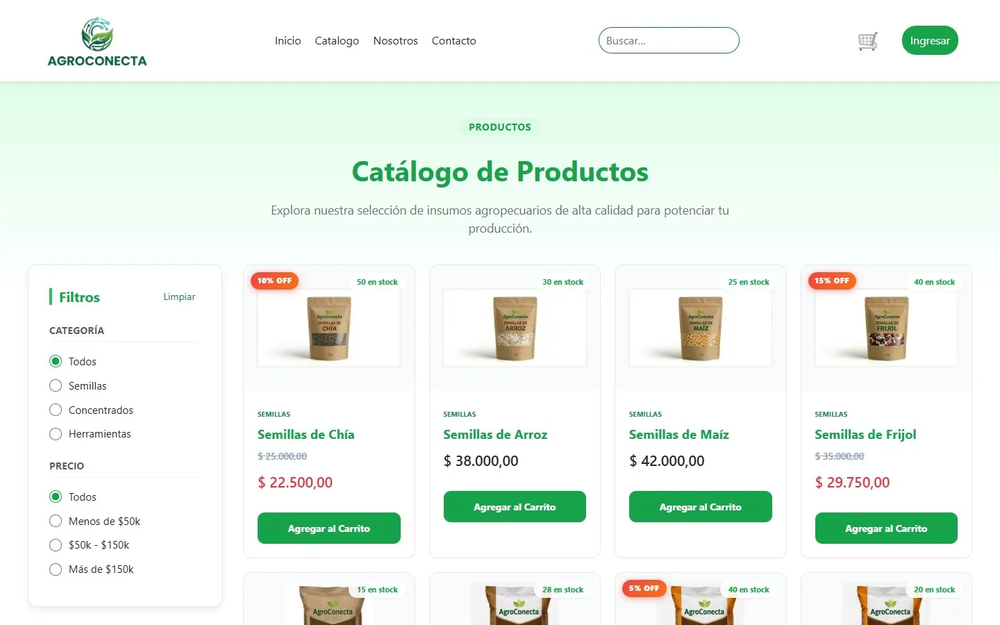

¿Buscas un backend junior?
Busco un rol junior full-stack o backend, remoto o híbrido en Colombia. El código de estos proyectos está en GitHub.
Escríbeme →código que funciona
Desarrollo APIs REST con Java/Spring Boot y Python/FastAPI, con autenticación JWT, PostgreSQL y frontends en Angular. Escribo pruebas, documento lo que construyo y me interesa integrar modelos de IA en aplicaciones reales.
Backends con Spring Boot y FastAPI, pipelines en tiempo real y aplicaciones con IA integrada. Todo el código está en GitHub.
Busco un rol junior full-stack o backend, remoto o híbrido en Colombia. El código de estos proyectos está en GitHub.
Escríbeme →Arrastra la línea: a la izquierda, una parte del backend de AgroConecta (capas, DTOs, roles con JWT); a la derecha, la tienda que ve el usuario final.
@RestController
@RequestMapping("/api/pedidos")
@RequiredArgsConstructor
public class PedidoController {
private final PedidoService service;
@PostMapping
@PreAuthorize("hasRole('CLIENTE')")
public ResponseEntity<PedidoDTO> crear(
@Valid @RequestBody CrearPedidoDTO dto,
Authentication auth) {
PedidoDTO creado =
service.crear(dto, auth.getName());
return ResponseEntity
.status(HttpStatus.CREATED)
.body(creado);
}
}

Catálogo, carrito, pedidos y panel admin de AgroConecta, con roles de administrador y cliente.
AgroConecta · equipo de 4Conciliación de pagos idempotente: repetir la operación no duplica efectos, ni con peticiones simultáneas.
PagoClaro · 2026Sismos del USGS cada 3 minutos, reporte horario con Airflow y monitoreo con Prometheus y Grafana.
Monitor de sismos · 2026Escribo pruebas, documento lo que construyo y reviso cada cambio, también los que hace la IA.
Soy Ingeniero en Sistemas y Magíster en Inteligencia Artificial, y me formé como Desarrollador Junior Full-Stack Java en Generation Colombia. Trabajo como freelance entregando proyectos a clientes y tengo dos años previos en soporte de sistemas, servidores y bases de datos.
Construyo APIs por capas con Spring Boot, Spring Security y JWT, servicios en FastAPI, frontends en Angular y entornos reproducibles con Docker Compose. Uso Claude Code en el desarrollo, revisando cada cambio, y me interesa sobre todo integrar modelos de IA en aplicaciones reales, como en CesarX Analytics.
Primero el trabajo y después los estudios, de lo más reciente a lo más antiguo. Toca cada fila para ver el detalle.
1.500 horas. Trabajo Fin de Máster: detección de cáncer de pulmón con CNN, transfer learning con EfficientNetB0 y Grad-CAM, sobre 1.097 tomografías de 110 casos.
Proyecto AI-XRay: modelo servido con una API en FastAPI con pruebas automatizadas y experimentos en MLflow.
Proyecto final AgroConecta en equipo de 4: SPA en JavaScript, Java, Spring Boot, JPA/Hibernate, PostgreSQL y JWT, con Scrum y flujo de pull requests.
Formación base en programación, bases de datos, redes e ingeniería de software.
Toca cualquiera para abrir el PDF original.
Busco un rol junior full-stack o backend. Si tu equipo necesita a alguien que pruebe y documente lo que construye, hablemos. respondo en menos de 24 h
Escríbeme →